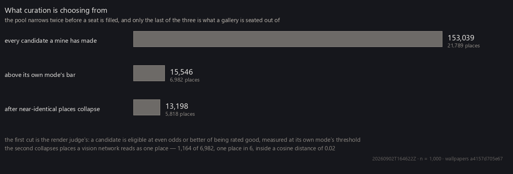
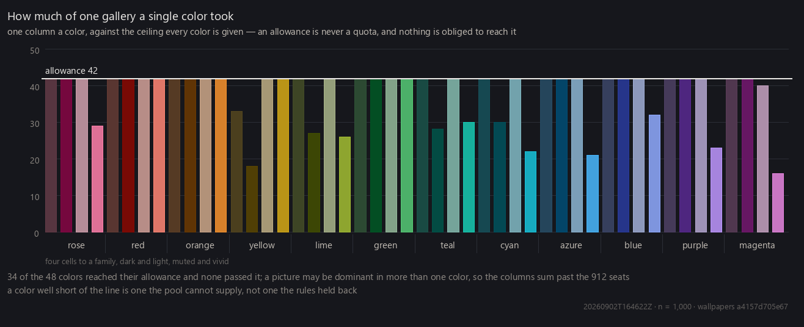
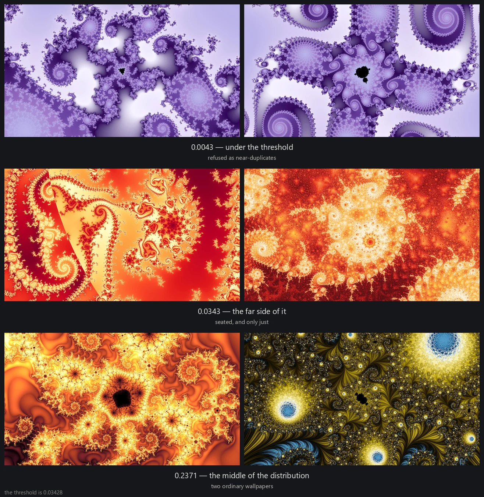
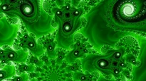
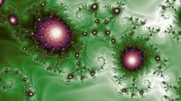
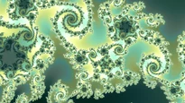
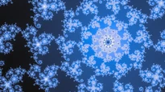
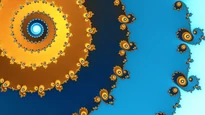
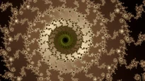

Finding good wallpapers ends with a pool: every judged picture every mine has made, accumulated across all of them, and growing. A pool is not a gallery. A gallery is a fixed number of wallpapers chosen to be looked at together, and almost everything that makes a set of wallpapers good (that it is not the same picture eight times, that it is not all blue, that it does not spend half its slots on one corner of one fractal) is a property of the set and of no picture in it. So curation is a single pass over the whole pool that chooses the whole set at once. Each place in the finished gallery is a seat, and a gallery of a hundred has a hundred seats to fill.

What is eligible
Not every judged picture is a candidate for a seat. A picture is eligible if the wallpaper judge gives it even odds or better of being rated exceptional: a probability of one half. Where a mode has enough rated locations to support the reading, that is measured at the judge's top threshold; where it does not, the gentler of its two thresholds is used instead, so a thinly rated mode is not locked out.
One half is a round number rather than a calibrated one, and it could be placed more carefully. It matters less than it looks. The cutoff only decides which of a location's pictures are worth considering at all, and once enough locations have been mined the collection is built out of pictures well clear of it in either direction.
That is the only quality test in the whole pass. Curation never re-scores anything and never lowers a bar to fill a seat; the pool is defined by that cutoff, and everything after this is about the shape of the set.
Two pictures of the same place
Two locations can be nearby frames of one spiral, and nothing in their coordinates says so. To tell, every admitted location is rendered once, small, in one fixed neutral palette and passed through DINOv2 , a vision network trained without labels that turns a picture into a vector positioned so that visually similar images land near one another. Two locations closer than a small fixed distance in that space are the same place as far as the gallery is concerned, and only one of them survives into the pool. On the current pool that collapses close to a fifth of the locations.
A second rule then holds for the whole pass: one wallpaper per location. A location that has produced four wonderful pictures in four different modes contributes exactly one of them, and which one is decided by everything else the set needs.
How much of a collection one color may take
Color palettes laid out the fifty-two named colors, which group into twelve hue families. Curation reads, for each finished picture, which of those colors it is actually dominant in (measured off the picture rather than off its palette, since a map only colors what the fractal's own values reach), and a picture may be dominant in two colors or in none.
Each color cell then gets an allowance: roughly three times its even share of the gallery, so that a color can be well over-represented but cannot take over the collection, and the same rule one level up for hue families. The rounding is generous on purpose. An allowance is a ceiling and never a quota: nothing is obliged to reach it. Under each color there is also a small floor, about one seat in fifty, so the solve tries to give every color some presence, and a color the pool cannot supply goes short of it.
One more count guards against a subtler repetition. Near-duplicate palettes in the library are grouped, and a group may take only about one seat in every forty. Two wallpapers drawn through two maps that differ only in a shade are two wallpapers a viewer will read as one idea.

Pictures that read as one wallpaper
Color allowances are about the collection's balance; they say nothing about two particular pictures looking alike. That is a separate test, and it is the only rule in the pass that opens a picture rather than reading a number off a record.
Each finished picture is reduced to the distribution of its colors: a few thousand pixels converted into a perceptual color space, with the two color axes weighted several times more heavily than lightness, since a viewer forgives a difference in brightness far more readily than a difference in hue. Two such distributions are compared by projecting both onto a large set of directions and measuring, along each, how far one would have to move to become the other. No picture is seated if it is closer than a fixed threshold to one already seated. Most pairs are settled by a cheap bound computed from a fraction of the data; only the pairs that bound cannot separate are compared in full.

Asking for what would otherwise not be there
Left to itself, a selection that maximizes quality picks whatever the pool happens to be richest in, and the modes that are harder to score well fall out of the collection entirely. So each mode carries a floor: a number of seats the gallery should hold of that mode if the pool can supply them. A mode the project rates highly is floored at twice one it rates ordinarily, and the floors deliberately sum to only half the seats they are dividing. The point is to guarantee a presence, not to dictate the whole composition.
A floor is not a ceiling in the other direction, and it never overrides the rules above it. Where a mode's floor collides with a color allowance or a palette group's cap, the ceiling wins and the floor goes unfilled and is recorded as such. Spirals are capped at a tenth of the gallery; without the cap they would take far more of it.
What the pass is trying to do
The pass has four goals in strict order, and a later one never buys an earlier one back:
- fill the seats;
- come as close as possible to every floor;
- make the worst picture in the gallery as good as it can be;
- and only then, make the gallery as good as it can be on the whole.
The third goal is the one worth dwelling on. A gallery is looked at one wallpaper at a time, so its weakest member is a fairer description of it than its average, and optimizing the average would happily trade a mediocre picture for a wonderful one and a bad one. Ordering the floors above the worst picture, in turn, is a judgment I made rather than a fact about galleries: I would rather see a fair example of a mode I like than a slightly better picture in a mode already well represented.
Nothing is ever padded. If the pool cannot fill a floor, or cannot fill the gallery, the shortfall is recorded and the seat stays empty rather than being filled by something below its bar.
Building the set
The gallery is built rather than searched exhaustively, because the pool is large and the rules interact.
It starts greedily. Anything the gallery is obliged to hold (the mode floors, and any color a particular gallery has been asked for) is seated first, scarcest first: a demand that only three locations in the whole pool can satisfy has to be spent before those three locations are taken for something else. What remains is filled by walking the eligible pictures in the gallery judge's rank order and seating each one the rules allow.
Then the set is improved by swapping: take one seated picture out, put one unseated picture in, and keep the exchange only if it strictly improves the goals above, in their order. Swaps run until a full pass over the gallery finds no exchange worth making. The method is usable at every point along the way: there is a complete, valid gallery from the moment the greedy pass finishes, and stopping early costs quality rather than producing nothing.
What the pass does not decide
It is worth being plain about what is not constrained here. Nothing in the selection reads which fractal family or which parameter plane a picture came from, or which minibrot the location was found near. Those things do come out reasonably mixed, but they come out that way because the pool is mixed and because the rules above (one wallpaper per location, near-duplicates refused, color spread) push hard against concentration, not because anything checks them. Rendering mode is the exception: the solve tries to give every mode but smooth a minimum number of seats, and it caps threads at a fifth of the gallery, after one gallery gave it more than seven times its share of the pool.
That is a deliberate position rather than an oversight, and it is provisional. Enforcing a mix directly is easy; knowing what mix is worth enforcing is not, and a constraint added before there is evidence for it would lock in a guess. So the approach is to watch what emerges across families, planes, and minibrots, and add an explicit rule only for an axis where the balance does not hold up on its own, as modes and colors already have.
Rendering the gallery
A seated picture is not the wallpaper. What the judges scored is a small render, and every wallpaper the gallery ships is drawn again from its record alone (the location, the mode and its settings, the palette, the geometry) at full size. Nothing from the small render is reused, and no judge sees the result: every probability attached to a gallery row is a statement about the picture that was judged, not about the picture that ships.
The autolevel operator from color palettes runs inside that render. The picture is drawn, measured, and where its tones fall outside the band, the palette's lightness is rebaked and it is drawn again, which happens to about four in ten of the renders it applies to. It is skipped for the direct traps, whose figures sit on a flat ground that its measurements would describe instead of the figure, and for the modes that shift where each sample reads in the map, where rebaking the map does not mean what it means elsewhere.
Every gallery row carries enough to draw its wallpaper again: the location, the recipe, the palette choice, the scores it was seated on, its autolevel stamp, and the pass that chose it.
Julia d = 5

Multibrot d = 4

Mandelbrot

Julia d = 5

Julia d = 5

Julia

Julia d = 4
Mandelbrot
What the three parts add up to, and what each is for, is the subject of full pipeline.